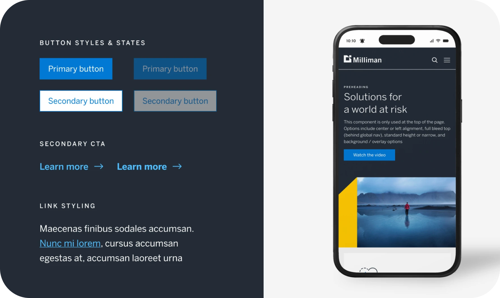

Product design · Enterprise healthcare · Data visualization
Milliman MedInsight.
Designing clearer ways for healthcare analysts and providers to navigate complex network, regulatory, and patient data.

01 · The challenge
Important decisions were buried inside dense, fragmented data.
Healthcare teams work with large provider rosters, regulatory rules, performance measures, and clinical records. Milliman reports that MedInsight Query Express can search hundreds of millions of claim lines in seconds, so my challenge was to make information at that scale easier to understand without losing important details.
Data was distributed
Comparing networks often meant moving between spreadsheets, reports, filters, and individual provider records.
Rules were interconnected
A change in geography, specialty, or measurement basis could reshape how a roster performed.
Clarity carried risk
The interface needed to simplify interpretation while preserving accuracy, traceability, and trust.
How might we turn complex healthcare data into a clear path from comparison to explanation to action?
02 · Two workstreams
I designed across analytical and clinical contexts.
Both projects needed a clear hierarchy, thoughtful use of detail, and alignment with an established design system. Each one also supported a very different moment of use.
Network comparison
Compare provider networks without manually reconciling reports.
I designed a dashboard that let analysts select provider rosters, apply the same rules to each one, and compare their performance side by side. A visual matrix showed where the networks differed, summary cards explained the size of each gap, and detailed views showed which providers were driving the results.
Mobile EMR
Bring essential patient information into a focused mobile workflow.
I also improved a mobile electronic medical record experience so healthcare providers could reach important patient information more efficiently. I simplified the sequence, prioritized the most relevant content, and accounted for usability and accessibility within a constrained screen.
03 · Process and iteration
I moved from system logic to interface detail.
I worked closely with product managers, engineers, designers, leadership, and healthcare experts. Regular reviews helped me check the workflow, ask better questions, and decide how much detail users needed at each step.
01 · Understand
Learn the domain and prior evidence
I reviewed earlier research and product files, clarified terminology, and mapped how roster rules, filters, and outputs related to one another.
02 · Structure
Define the comparison flow
I sketched how users would select, add, remove, and rename rosters while keeping rule logic consistent across every comparison.
03 · Make complexity visible
Layer summary and detail
I developed the comparison tab, difference matrix, KPI summary, expanded view, export flow, and provider details as one connected path.
04 · Refine
Iterate with the wider team
I presented the concept to product and design stakeholders, incorporated feedback, clarified roster identity, and refined components before the final handoff.
04 · Experience and business impact
The design made it easier to understand the data and decide what to do next.
The work is confidential, and I do not have public metrics from after launch. Instead, I have focused on what the experience helped users do and the value it was designed to create.
Experience impact
Reduced the mental work of comparison.
The concept brought filters, compliance differences, summaries, and provider data into one workflow. Analysts could move from “what changed?” to “why?” without rebuilding the comparison by hand.
Business impact
Created a clearer path to network decisions.
By making regulatory gaps easier to identify, explain, simulate, and export, the design was intended to support faster network adequacy analysis, more traceable reviews, and better alignment across analytical and regulatory teams.
05 · Reflection
Complexity does not disappear. It needs the right structure.
This internship taught me how to design enterprise software with large amounts of regulated data while balancing user needs, technical constraints, business goals, and an existing product language.
Design the decision, not just the dashboard
The strongest structure begins with what a user needs to understand and do next.
Translate data without losing nuance
Progressive disclosure made dense information scannable while keeping its underlying evidence available.
Use collaboration as a design tool
Frequent feedback helped align interaction details with domain, product, and engineering realities.
Some work cannot be shown publicly.
To respect confidentiality, this case study focuses on my process, design reasoning, and impact rather than proprietary screens or data. If you would like to learn more, please contact me.